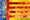
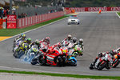
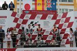
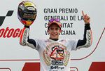

De: La Frikipedia, la enciclopedia extremadamente seria.
De: La Frikipedia, la enciclopedia extremadamente seria. De: La Frikipedia, la enciclopedia extremadamente seria.
| De la serie Circuitos de MotoGP: | |||
| Circuito de | |||
| |||
| Localización: | Valencia, España | ||
| Sede del GP: |  Gran Premio de La Comunidad Valenciana | ||
| Longitud: | 4.005 metros | ||
| Nº vueltas (En MotoGP): | 27 | ||
| Piloto con más victorias: | | ||
| Años en la MotoGP: | 1999- | ||
| Índice de peligrosidad: | Poca (si no eres Alvaro Bautista claro) | ||
| Número de accidentes por carrera: | Pocos | ||
| Valoración general: | Aburrido (excepto moto2 y moto3) | ||
«Vamos, vamos que gane.. ¡que! ¿¡Stoner me adelantó en la linea de meta!?»
~ Ben Spies Cuando fue adelantado en la ultima vuelta
El Circuito de Cheste (o como circuito de la Comunidad Valenciana Ricardo Tormo) Es un autodromo que se encuentra en Valencia que su nombre es en honor al idolo Local Heinz Harald Frentzen Ricardo Tormo campeón de las categorías 80cc y 125cc.
aqui se puede definir el campeonato de las motos la mayoría de las veces pero no siempre se hacen carreras tan entretenidas.
Aquí se acoje ademas de MotoGp la Gpe3 y las pruebas de pretemporada de la Fórmula 1 hasta 2011.
Se empieza en la curva 1 llamada aspar que es un curva a media velocidad donde se puedes hacer un srike y te vas a una recta que desemboca en la semihorquilla curva 2 o Doohan luego te descojonas encuentras con la curva 3, despues de una pequeña recta te encuentras con la curva Nico Terol o la curva 4 y de inmediato la curva 5, llegas a otra recta y te vas a la curva 6 luego una rapida curva 7 (rapida pero no tanto porque te vas a salir), después llegas a la curva 8 y 9 para después llegar a las curvas 10 y 11 que se toman a derechas que desemboca en otra recta (vamos que falta un poco) para llegar a la curva a derechas 12 donde llegas a una especie de mezcla entre recta o curva laaaaaaaaaaarga que se va cerrando hasta llegar a a la ultima curva que llega por fin a la recta principal.
Actualmente es el cuarto gran premio que trascurre en España tras el GP de Dragón pero con muy poco publico en las tribunas porque van sobraos no les interesa o otro ya ganó el campeonato
| Afoto destacada del GP | Gran Premio | Resumen |
|---|---|---|
|  | Gran Premio de la Comunidad Valenciana de 2011 | fue uno de esos grandes premios que casi nunca pasan y es que ademas de lo que ves en la afoto ese australiano iba ganando hasta que que lluvia ´le hizo salir mas de 1 millón de veces de la pista y el liderato lo tomo Ben 10 hasta que Stoner le puso chala y le gano en la linea de meta. |
|  | Gran Premio de la comunidad Valenciana 2012 | despues de una largada buena El kamikase y Casimiro piedra que se retiraba del motociclismo por problemas |
|  | Gran Premio de la comunidad Valenciana 2013 | como puedes ver en la foto Chico atomico Ganó el campeonato siendo el campeon mas |
Autor(es):